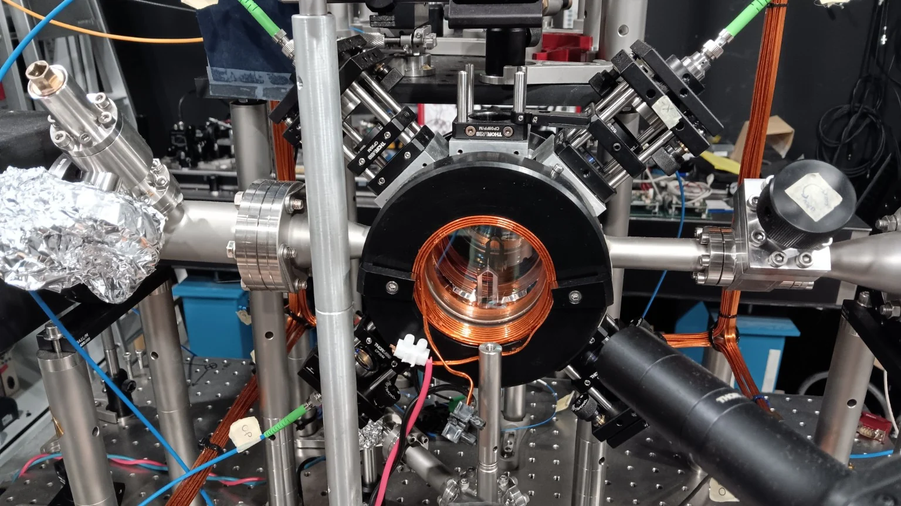
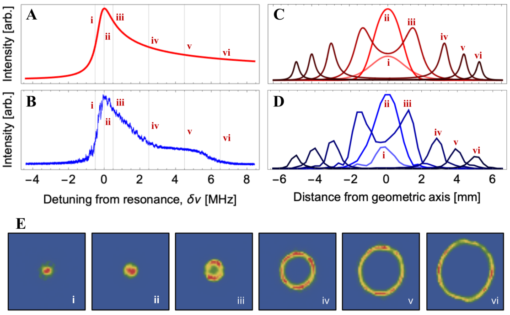
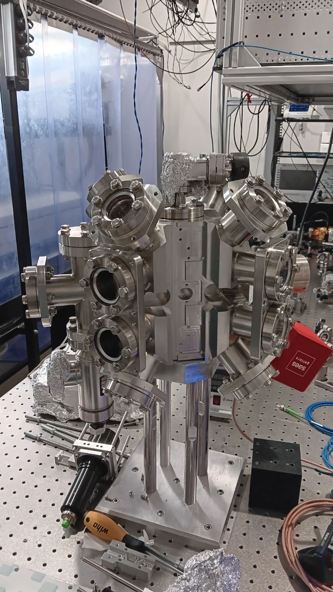
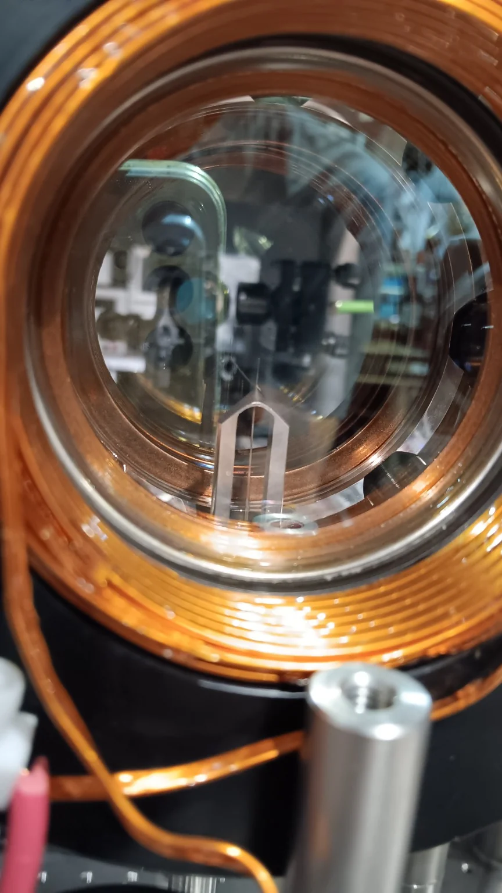

Emergent light–matter physics
Collective dynamics, self-organization and continuous-symmetry phenomena with cold atoms in traveling-wave cavities and hollow-core fibers.
Cold atoms, quantum sensing and emergent physics
We develop cold-atom experiments and programmable physical systems to study precision measurement, collective phenomena and the emergence of complex physical behaviour. Our work spans atom interferometry for gravity and fundamental physics, continuous ultracold-atom sources, cavity and waveguide QED, and synthetic systems in which interaction laws can themselves be explored.

Collective dynamics, self-organization and continuous-symmetry phenomena with cold atoms in traveling-wave cavities and hollow-core fibers.
High-flux Sr and Yb sources for continuous operation, including architectures aimed at CW superradiance and interleaved atomic clocks.
Precision inertial sensing and atom interferometry for gravity, gravitational gradients and fundamental physics, from laboratory instruments to long-baseline concepts.
FPGA cellular automata and coupled-oscillator networks as programmable platforms for exploring collective behaviour, statistical mechanics and emergent effective laws.



atomSmltr: a modular Python package to simulate laser cooling setups.
M. Weill, A. Bertoldi, A. Dareau
SciPost Physics Codebases 76 (2026)
Journal ·
arXiv
Multiphoton Atom Interferometry via Cavity-Enhanced Bragg Diffraction.
D. O. Sabulsky, J. Junca, X. Zou, A. Bertoldi, M. Prevedelli, Q. Beaufils,
R. Geiger, A. Landragin, P. Bouyer, B. Canuel
Physical Review Letters 132, 213601 (2024)
DOI
High flux strontium atom source.
C.-H. Feng, P. Robert, P. Bouyer, B. Canuel, J. Li, S. Das, C. C. Kwong,
D. Wilkowski, M. Prevedelli, A. Bertoldi
Quantum Science and Technology 9, 025017 (2024)
DOI
Forecasting ocean wave-induced seismic noise.
A. Bertoldi, S. Gaffet, M. Prevedelli, D. A. Smith
Scientific Reports 14, 21002 (2024)
DOI